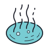

Monitorar
Com a solução ThermoFish
você recebe em tempo real os parametros
de todos os seus
tanques.
Preservar
Os dados captados por
nossos sensores são essencias para
enteder como manter a saúde
dos animais
e garantir a continua produção.

Analisar
A ThermoFish oferece um painel
com todas as informações que o
produtor necessita para
avaliar e melhorar
sua produção.
Quanto sua safra
pode crescer
com nossa solução
Sem um controle de temperatura o crescimento dos peixes leva em torno de 7 meses para atingir o peso de abate, com a implementação do nosso projeto você consegue acompanhar a temperatura da água e assim tomar as melhores decisões de manejo acarretando redução de 1 mês no tempo de crescimento, ou seja, sua produção aumenta em até 16%.